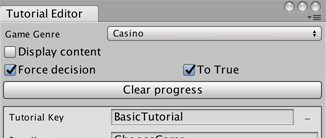

Playing Tutorials
Use the Tutorial Manager plugin API to start and advance your tutorial.
Before playing a tutorial, check whether the Tutorial Manager decision engine recommends that the current player should see the longer or the shorter tutorial. You can then indicate which tutorial you are playing using the key names you defined with the Tutorial Editor.
Note: All code that references the Tutorial Manager API needs to import the namespace by calling:
using UnityEngine.Analytics;
Start a tutorial
Use the TutorialManager.GetDecision() function to determine whether the Tutorial Manager decision engine recommends that you show your longer or your shorter tutorial to the current player:
if (TutorialManager.GetDecision()) {
TutorialManager.Start("FullTutorial", true);
} else {
TutorialManager.Start("ShortTutorial", true);
}
Note: If the Tutorial Manager cannot contact the Unity Analytics service for any reason and the decision about which tutorial to show has not been previously recorded, the Tutorial Manager shows the default, long version of the tutorial. (When this occurs, TutorialManager.GetDecision() returns true.)
Advance a step
To advance the tutorial when a player completes a step, call the TutorialManager.StepComplete() function.
TutorialManager.StepComplete();
What happens next depends on whether you set the autoAdvance parameter (the true in the examples above) of the TutorialManager.Start() to true or false:
When you set the autoAdvance parameter to true, the Tutorial Manager advances to the next step in the tutorial.
When you start a tutorial with autoAdvance set to false, then the Tutorial Manager does not advance to the next step when you call the TutorialManager.StepComplete() function. Instead, the Tutorial Manager waits for you to call TutorialManager.StepStart().
TutorialManager.StepStart();
End a tutorial
There is no specific function to call when a player completes all the steps in a tutorial — just call TutorialManager.StepComplete() for the final step.
TutorialManager.StepComplete();
If you allow players to skip a tutorial after it has started, call the TutorialManager.Skip() function if they choose to do so.
TutorialManager.Skip();
Resume a Tutorial
If a tutorial is "paused" or otherwise interrupted before the player completes all the steps, then you can resume the current step of the current tutorial with:
TutorialManager.StartStep(TutorialManager.stepId);
Note: The Tutorial Manager only keeps track of the current tutorial. If you allow your players to switch between multiple tutorials, then it is your responsibility to keep track of the completion status and step position of each tutorial.
Test an Adaptive Tutorial
To help you test your tutorials, the Tutorial Editor window includes a Force decision option. When you enable this option, Tutorial Manager simulates receiving a decision from the Tutorial Manager service based on the To True option.

Tutorial Editor testing options
When To True is checked, then the Tutorial Manager simulates the decision to show your long tutorial and sets its own state accordingly.
When To True is unchecked, Tutorial Manager simulates the decision to show your short tutorial.
The Tutorial Editor window options only control the Tutorial Manager when you play your game in the Unity Editor. To simulate a decision outside the Unity Editor, the TutorialManager.GetDecision() function provides an override that takes a boolean forceDecision parameter. When you use this version of GetDecision(), you can set the state of the Tutorial Manager to simulate a true or false decision from the machine learning algorithm.
The Tutorial Editor window also provides a Clear Progress button. Click this button to reset the Tutorial Manager state. You can also use the TutorialManager.Reset() function from code.